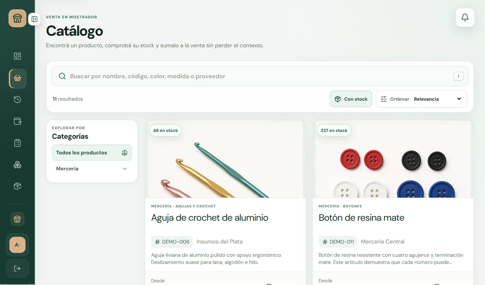

TIENDA ONLINE
Cliente
Elegí un artículo y su variante. Confirmá el retiro en el local con pago en efectivo y anotá el número de pedido.
Ver guía de clienteDESARROLLO FULL STACK
Un cliente encarga un hilo por internet y lo retira en el mostrador. Desarrollé el sistema que permite seguir ese mismo pedido desde que se elige el color hasta que el cobro aparece en caja.
Ver el recorrido
Diseñé la interfaz en React y la API en Node.js con Express. Modelé los productos, sus variantes y los pedidos en MariaDB con Prisma. Los permisos de cada cuenta determinan quién puede comprar, entregar un pedido o consultar las finanzas.
Desplegué el sistema en Linux con Docker Compose y sigo a cargo de su mantenimiento.
Las tres guías muestran el mismo pedido desde la tienda, el mostrador y la caja. La demo interactiva completa se ejecuta en local.
TIENDA ONLINE
Elegí un artículo y su variante. Confirmá el retiro en el local con pago en efectivo y anotá el número de pedido.
Ver guía de clienteMOSTRADOR
Buscá ese número en Pedidos de clientes. Prepará el pedido y confirmá la entrega para registrar la venta.
Ver guía de empleadoADMINISTRACIÓN
Abrí Finanzas y revisá los movimientos de caja. Buscá el ingreso por la venta que acabás de entregar.
Ver guía de propietario